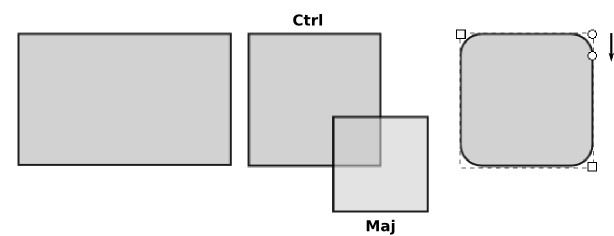
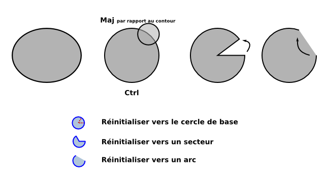
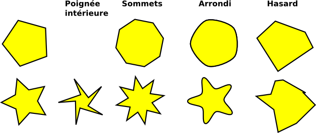
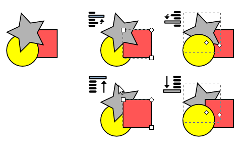
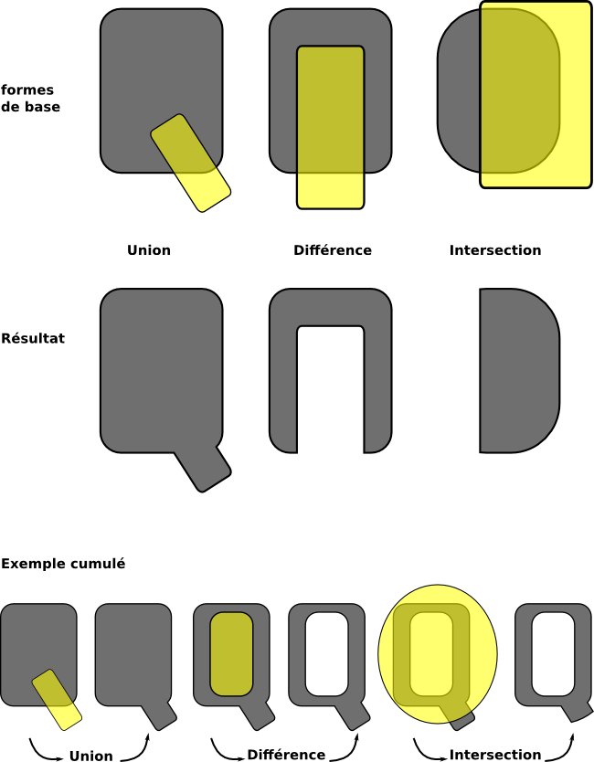

Prise en main d'Inkscape
Inkscape est un logiciel de dessin vectoriel performant dont le format d'enregistrement plain SVG est un format standard qui contient une recommandation concernant les fontes, dites fontes SVG. Ainsi Inkscape permet non seulement de dessiner des formes plus ou moins variées, comme tout éditeur vectoriel digne de ce nom, mais intègre aussi des options permettant de créer les caractères (courbes de Bézier à la PostScript, courbes Spiro, éditeur de fontes SVG) compatibles notamment avec FontForge, ce dernier pouvant importer des fontes SVG.
Inkscape, en tant qu'éditeur apprécié des graphistes prend toute sa place dans la partie intermédiaire de la création de la fonte : celle qui consiste à dessiner les caractères. S'il est possible d'effectuer cette tâche avec FontForge lui-même, de nombreuses personnes préféreront passer par Inkscape qui offre une aisance et une intuitivité dans le dessin absolument exceptionnelles.
Installation d'Inkscape
Inkscape existe pour plusieurs systèmes d'exploitation dont Linux, Windows et MacOS. C'est un logiciel assez léger qui peut être téléchargé rapidement sur le site http://inkscape.org/download/?lang=fr.
Dessiner avec les outils géométriques
Les outils d'Inkscape sont par défaut situés dans la barre verticale à gauche de la fenêtre. Chaque outil possède des options qui peuvent être modifiées dans la barre à affichage contextuel placé horizontalement au-dessus de l'espace de travail (dessin). À droite, vous aurez peut-être une barre verticale qui permet de définir le magnétisme de la souris et des traits de manière à les aligner plus facilement.
L'utilisation d'outils géométriques peut être utile dans le cas de fontes simples aux courbes simplifiées ou encore à la création de caractères graphiques non alphabétiques dans le style Dingbats.
Rectangle
L’outil Rectangle permet de dessiner des rectangles et des carrés dans l’image en cours.
Les rectangles possèdent des poignées carrées dans les coins opposés pour redimensionner. Les poignées rondes permettent d'obtenir des angles arrondis. Glisser les poignées en maintenant la touche [Ctrl] accroche le rectangle de sorte que sa largeur, sa taille, ou ses proportions soient préservées.
- [Maj]+[clic]
- sur une poignée d’arrondi enlève l’arrondi
- Ctrl
- Dessine un carré ou plus exactement contraint la création à des paliers. Il suffit de trouver le palier qui produit le carré.
- Maj
- Centrage. Permet de dessiner la forme à partir de son point central en faisant en sorte que celui-ci reste fixe.
-
 Nos recommandation concernant les fontes, dites fontes SVG. Ainsi Inkscape permet non seulement de dessiner des formes plus ou moins variées, comme tout éditeur vectoriel digne de ce nom, mais intègre aussi des options permettant de créer les caractères (courbes de Bézier à la PostScript, courbes Spiro, éditeur de fontes SVG) compatibles entre autres avec FontForge qui peut importer des fontes SVG. Inkscape, en tant qu'éditeur apprécié des graphistes prend toute sa place dans la partie intermédiaire de la création de la fonte : celle qui consiste à dessiner les caractères.
Cercles et Arcs
L’outil Ellipse permet de dessiner des ellipses, des cercles et des arcs dans l’image en cours. En tant que forme vive, ces propriétés peuvent être rééditées autant de fois que nécessaire.
Quand l’ellipse est d’abord dessinée avec l’outil, il y a trois poignées, au-dessus, à gauche et à droite:
- La supérieure et la gauche contrôlent les dimensions horizontales et verticales de la forme.
- La poignée droite édite l’arc de la forme. Traîner la
poignée droite avec l’outil d’ellipse dans l’une ou l’autre direction,
horizontale ou verticale, commencera un arc.
- Quand l’outil est déplacé à l’intérieur des limites de la forme (l’ellipse entière) l’arc sera ouvert.
- Quand l’outil traîne, l’arc est déplacé en dehors des limites de la forme, l’arc sera fermé. Tenir Ctrl tout en glissant l’arc permet de s’accrocher aux angles comme défini dans la fenêtre de préférences d’Inkscape.
Les trois derniers boutons de la barre d'options de l'outil Ellipse, permet d'avoir accès aux réglages par défaut.

Polygone
L’outil Etoile/Polygone permet de dessiner des étoiles ou des formes à plusieurs côtés et géométriques dans l’image en cours. Comme les spirales, les étoiles sont des formes très difficiles à dessiner à main levée ou même avec la plume tant leur régularité est difficile à reproduire. Cela fait de cet outil un élément très pratique même s’il est souvent moins utilisé que le rectangle ou l’ellipse. En modifiant certains paramètres listés ci-dessous, cet outil peut aussi servir à dessiner des triangles et autres formes régulières quel que soit le nombre de côtés qu’ils contiennent.
On peut donc le considérer utile pour toute création de polygone. De plus, certains algorithmes de déformations permettent d’enrichir la forme des branches de façon extrêmement surprenante.
En tant que forme vive, l’aspect de l’étoile peut encore subir des modifications après sa création, à l’aide des poignées ou des paramètres de la barre d’option.
Dans la barre d'options :
- les deux premiers boutons permettent de passer du mode étoile au mode polygone;
- nombre de sommet défini le nombre de branches ou de côté;
- Arrondi va arrondir les côtés (d'un polygone) ou les angles (d'une étoile). Peut aussi être effectué avec la [Maj] après création de la forme
- Hasard déformera le polygone ou l'étoile aléatoirement [Alt] après création de la forme
- Ctrl
- Contraint le dessin de l’étoile à respecter un angle. Le déplacement de la souris permet de modifier cet angle par incrément régulier. La valeur de cet incrément peut être défini dans la fenêtre Fichier > Preferences Inkscape, onglet Etapes.

Changer la superposition des formes
Lorsque plusieurs formes sont créées, Inkscape va systématiquement donner un indice de superposition à la forme créé. Par défaut, les nouveaux objets sont placés à un niveau supérieur des précédents, si bien qu'ils peuvent les cacher. Pour changer l'ordre de superposition des formes, l'outil de Sélection (flèche noire) possède 4 options qui permettent de changer ces niveaux. Dans l'exemple suivant, les formes de bases sont à gauche et les 4 versions modifiées à droite avec pour chacune l'icône du bouton utilisé pour le changement :
- monter d'un niveau
- descendre d'un niveau
- mettre en haut ou au premier-plan
- mettre en bas ou descendre à l'arrière-plan
Les formes affichées avec des pointillées sont celles auxquelles les modifications ont été appliquées.

En ce qui concerne le positionnement des formes, il peut être intéressant de bien prendre connaissance des options de magnétisme des points aux grilles et d'alignement (Objet > Aligner - Distribuer)
Combiner les formes en un chemin unique
Qu'il s'agisse d'Inkscape ou de FontForge, il sera préférable que le dessin de base du glyphe ne soit composé que d'un seul chemin vectoriel. Ainsi, en ce qui concerne les glyphes créés par associations de formes, il sera préférable d'effectuer des traitements pour les combiner en un. Il existe plusieurs options; les plus utiles et courantes sont les suivantes.
- Union
- Union est disponible dans le menu Chemin > Union [Ctrl]+[+]. Elle va combiner les deux formes en une seule par addition. L'espace et la forme occupée par le résultat est simplement l'espace globale occupée par les deux ou plus formes initiales.
- Différence
- Différence, menu Chemin > Différence [Ctrl]+[-], va creuser la première forme créée normalement placée en dessous, de la seconde (au-dessus). La forme résultante est toujours une forme plus petite. L'option ne fonctionne correctement que si 2 formes seulement sont sélectionnées.
- Intersection
- Les deux formes superposées disparaîtront au moment de l'intersection (menu Chemin > Intersection [Ctrl]+[*])au profit d'une forme unique qui est occupera l'espace de superposition des deux formes de bases.
-
